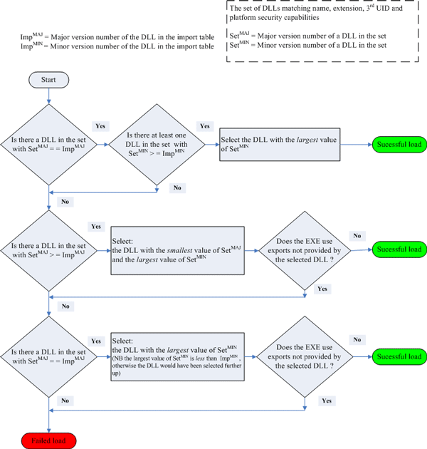

Loader Search Rules
This topic provides a summary of the rules that the loader follows to search for EXEs and DLLs.
Search rules for an EXE
To start a new process, call RProcess::Create().
RProcess::Create() loads
the EXE specified in the input parameters. The function then looks through
the import table of the EXE to get a list of DLLs that the EXE references.
The loader uses the list of DLLs in the import table to load the DLLs. If
DLLs reference other DLLS, the loader uses the same method to load those DLLs.
See Search
rules for a DLL listed in the import table of an EXE.
The result of a search for an EXE depends on:
the name of the EXE. You provide this information.
the UID type : you provide. This is optional
the version of the EXEs on the device
You pass the name of the EXE in the first parameter of RProcess::Create().
You have a number of choices:
you can specify the file name only. The loader will assume a
.exefile extension. For example:efileyou can specify a filename and an extension. For example:
efile.exeyou can put a path in front of the file name. A path has limited use, because the loader can load EXEs only from the directory
\sys\bin, or from subdirectories of\sys\bin.
The search procedure
The loader searches for EXEs with the given name and extension. More than one EXE with the given name and extension can exist on a device.
If you do not provide a path, the loader searches the
\sys\bindirectory on all drives. The loader searches drives in the orderY:,X:...B:,A:. TheZ:drive is searched last. Subdirectories of\sys\binare not searched.If you provide a path, there are only three useful cases:
to limit the search to a specific drive. For example:
X:\sys\binwhere
X:can be one of the drivesA:toZ:.to limit the search to a subdirectory of
\sys\binon a specific drive. For example:X:\sys\bin\aaa\bbbThe use of subdirectories in
\sys\binis not common.where
X: can be one of the drivesA:toZ:.to limit the search to a subdirectory of
\sys\binon all drives. For example:\sys\bin\aaa\bbbThe loader searches all drives in the order
Y:,X:...B:,A:. TheZ:drive is searched last.The use of subdirectories in
\sys\binis not common.
The loader cannot load EXEs from other directories, because system security prevents it.
The loader compares the UID type (
TUidType) of each EXE in the list with the UID type you specify inRProcess::Create(). The UID type is a set of three UIDs. Each UID in the UID type that you specify must match the same UID in the UID type of the EXE. If you specify KNullUid for any of the three UIDs in your UID type, a match is automatic.If the search has found no EXEs, the load fails.
If the search has found one EXE only, the loader loads that EXE.
If more than one EXE has been found, the loader loads the EXE with the highest version. A version
N.nis higher than versionM.mif(N>M or (N==M and n>m)).If all EXEs have the same version, the loader loads the version found first.
Search rules for a DLL in the import table of an EXE or another DLL
After the loader has selected the EXE, the loader loads all DLLs in the import table. This is also called static linkage.
The import table contains the name and extension of each DLL. The import table also contains the version of each DLL and the 3rd UID that identifies each DLL. The version information is stored in the import table when the executable file is built. All DLLs have an ordered set of three UIDs. The third UID gives a unique identity to the DLL. See UID protection.
The search procedure
The search uses the following procedure for each DLL:
The loader searches the
\sys\bindirectory on all drives for all DLLs that have the filename and extension. The loader searches drives in the orderY:,X:...B:,A:. TheZ:drive is searched last. Subdirectories of\sys\binare not searched. The loader searches for all versions of the DLL. If the loader finds the same version of a DLL on more than one drive, the loader only adds the first one to the set of possible DLLs. For example, if version 2.1 of a DLL is on driveD:and on driveZ:, only the version on driveD:is added to the set of possible DLLs.The loader cannot load DLLs from other directories, because system security prevents it.
[Before December 2007, the loader had different behaviour. The loader searched the drive from which the EXE was loaded before the loader checked the other drives. For example, if the EXE was loaded from drive
Z:, and version 2.1 of a DLL was on driveD:and driveZ:, the loader selected the version of the DLL that was on driveZ:.]The loader then selects those DLLs that have the same 3rd UID from the set of possible DLLs. This operation can decrease the set of possible DLLs. If there are no DLLs in the set, the load fails.
The loader then selects those DLLs that have platform security capabilities that match or exceed those of the EXE. This selection operation can decrease the set of possible DLLs. If there are no DLLs in the set the load fails.
See also : Platform security.
Each DLL in the import table of the EXE has a version number. This number is the version of the DLL to which the EXE is linked. The loader uses the version number in the import table to select the correct version of the DLL. The following flowchart shows how the loader selects the DLL from the set of possible DLLs.
If there are no DLLs that meet the requirements, the load fails.
Search rules for a DLL loaded from a program
To load a DLL from a program, call RLibrary::Load().
This is known as dynamic linking.
RLibrary::Load() loads
the DLL specified in the input parameters. The function then uses the import
table to get a list of referred DLLs. The loader loads the DLLs in the list
and uses the same search method that the loader uses for EXEs. See Search rules for a DLL in the import table of an EXE.
The result of a search for an DLL depends on:
the name of the DLL. You provide this information.
the UID type : you provide. This is optional.
the required version : you provide. This is optional.
the version of the DLLs on the device.
You pass the name of the DLL in the first parameter of RLibrary::Load().
You have a number of choices:
you can specify the file name only. The loader will assume a
.dllfile extension. For example:efsrvyou can specify a filename and an extension. For example:
efsrv.dllyou can put a path in front of the file name. A path has limited use, because the loader can load DLLs only from the directory
\sys\bin, or from subdirectories of\sys\bin.
See Dynamically loading link libraries and Using ECom.
The search procedure
The loader searches for DLLs with the given name and extension. More than one DLL with the given name and extension can exist on a device.
If you do not provide a path, the loader searches the
\sys\bindirectory on all drives. The loader searches drives in the orderY:,X:...B:,A:. TheZ:drive is searched last. Subdirectories of\sys\binare not searched.If you provide a path, there are only three useful cases:
to limit the search to a specific drive. For example:
X:\sys\binwhere
X:can be one of the drivesA:toZ:.to limit the search to a subdirectory of
\sys\binon a specific drive. For example:X:\sys\bin\aaa\bbThe use of subdirectories in
\sys\binis not common.where
X:can be one of the drivesA:toZ:.to limit the search to a subdirectory of
\sys\binon all drives. For example:\sys\bin\aaa\bbbThe loader searches all drives in the order
Y:,X:...B:,A:. TheZ:drive is searched last.The use of subdirectories in
\sys\binis not common.
System security prevents the loader from loading DLLs from any other directories.
The loader compares the UID type (
TUidType) of each DLL in the list with the UID type you specify inRLibrary::Load(). The UID type is a set of three UIDs. Each UID in the UID type that you specify must match the same UID in the UID type of the DLL. If you specify KNullUid for any of the three UIDs in your UID type, there is a match.If the search has found no DLLs, the load fails.
The loader then selects those DLLs that have platform security capabilities that match or exceed those of the process . This selection operation can decrease the set of possible DLLs. If there are no DLLs in the set the load fails.
If the search has found no DLLs, the load fails.
If you specify a version number in
RLibrary::Load(), the loader selects a version of the DLL from the set. The following flowchart shows how the loader selects the DLL from the set of possible DLLs.
If there are no DLLs that meet the requirements, the load fails.
If you do not specify a version number in
RLibrary::Load(), the loader loads the DLL with the highest version. A versionN.nis higher than versionM.m, if(N>M or (N==M and n>m)).If all DLLs have the same version, the loader loads the DLL found first.